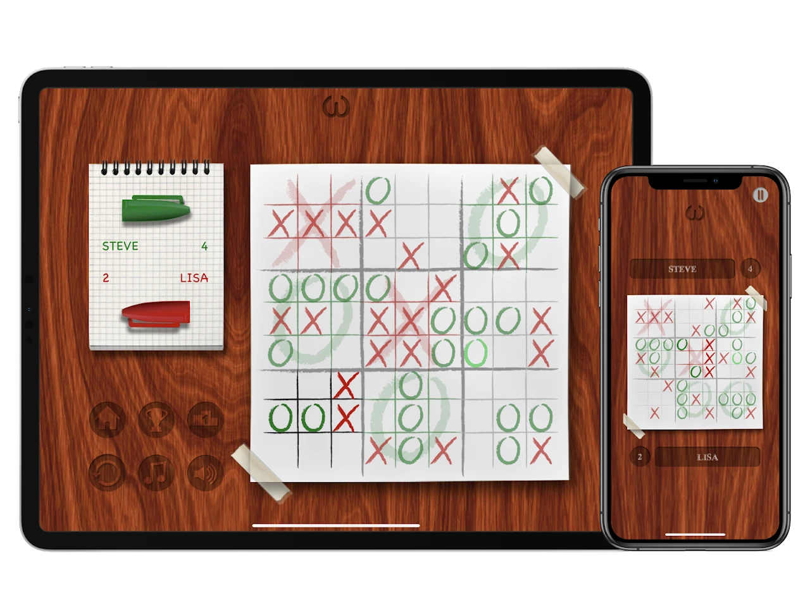

The short answer
9x9 tic-tac-toe is nine small tic-tac-toe boards inside one big board. The square you play in a small board sends your opponent to the matching small board on the big one. Win three in a row on a small board to claim it, and claim three small boards in a row to win the game. It's also known as ultimate tic-tac-toe, and it's how TicToe Fury turns a game that always ends in a draw into one that rewards strategy.
The rules, step by step
- The board. The big board is a 3x3 grid, and each of its nine spaces is a small 3x3 tic-tac-toe board.
- The first move can go in any square of any small board.
- Every move picks the next board. The square you choose inside a small board sends your opponent to the small board in the same position. Play the top-right square, and your opponent has to play somewhere in the top-right board. There are no free moves: you always play in the board your opponent sends you to.
- Win a small board by getting three in a row on it, just like regular tic-tac-toe.
- Win the game by winning three small boards in a row on the big board: across, down or diagonally.
What it looks like in TicToe Fury

Every board is drawn by hand. When a player wins a small board, a big X or O is drawn over it, so you can read the big board at a glance. Play the AI on easy or hard, pass one iPhone or iPad between two players, or play friends and random players online through Game Center.
Strategy tips
Look where you send them
Before you pick a square, look at the board it sends your opponent to. A great move on this board can hand them a win on the next one.
Don't open a door
Avoid sending your opponent to a board where they already have two in a row and the third square is open.
Lose small, win big
Sometimes giving up a small board is worth it, if the move that loses it sends your opponent somewhere useless.
Think like the big board
The big board plays like regular tic-tac-toe, so the center and corner boards are worth fighting for.
Frequently asked questions
Is 9x9 tic-tac-toe the same as ultimate tic-tac-toe?
Yes. 9x9 tic-tac-toe, as TicToe Fury plays it, follows the same idea as the game often called ultimate tic-tac-toe: nine small boards inside a big one, where the square you pick decides which board your opponent plays next.
Can I ever play anywhere I like?
Only on the very first move. After that, TicToe Fury always sends you to the board your opponent's last move points to, and you have to play there. There are no free moves, which is why every square you pick matters twice: once for the board you're on, and once for the board you send your opponent to.
Can I play 9x9 tic-tac-toe against the computer?
Yes. TicToe Fury has an AI opponent in easy and hard mode, so you can learn the 9x9 game on easy and test your strategy on hard.
Can I play 9x9 tic-tac-toe online with friends?
Yes. TicToe Fury plays online through Game Center turn-based matches, against a friend or a random player. Each of you takes your turn whenever you're free, and matches sync across your iPhone and iPad.
Why is 9x9 tic-tac-toe better than regular tic-tac-toe?
Regular 3x3 tic-tac-toe ends in a draw once both players know the basic strategy. In 9x9, every move also chooses where your opponent plays next, so you have to plan ahead, set traps and sometimes give up a small board to win the big one. See TicToe Fury vs regular tic-tac-toe.
Ready to play?
Try it on easy first
TicToe Fury is free on iPhone and iPad. Learn the 9x9 rules against the easy AI, then take on the hard AI or a friend online.